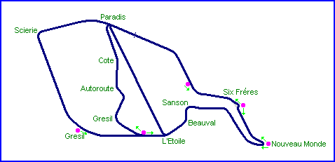
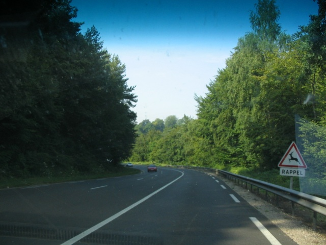
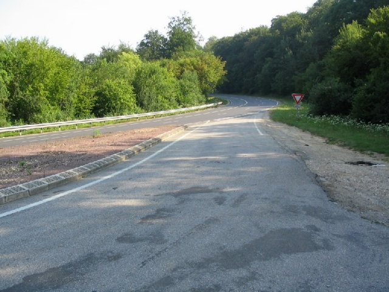
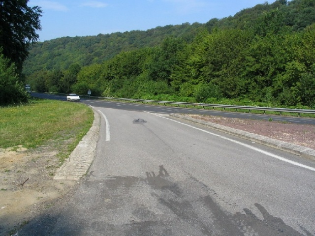
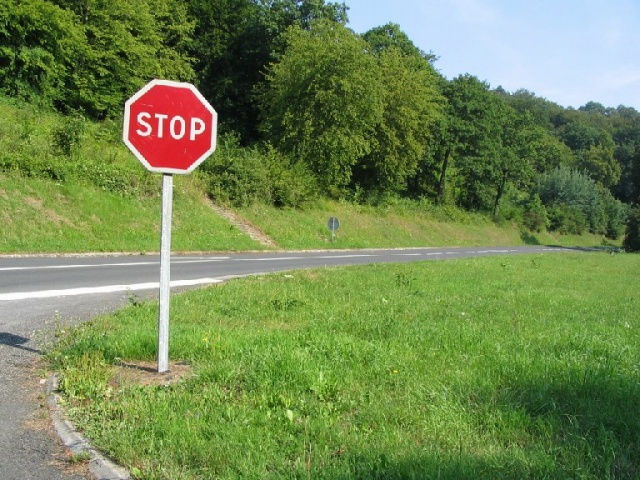
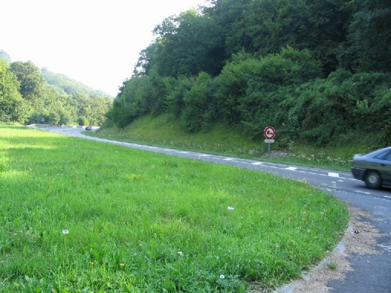
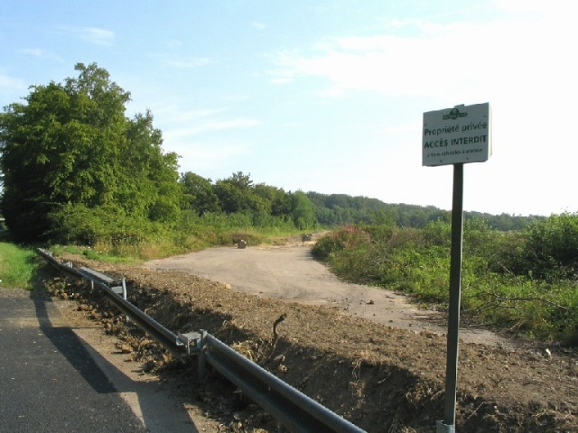
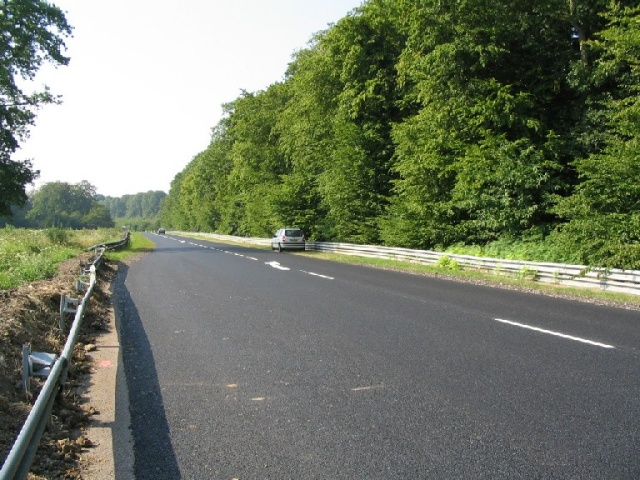
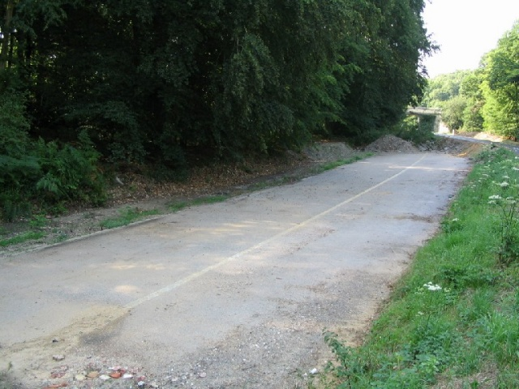

| Related Information | ||
| Photographs of Rouen by Luc Ghys, June 1996 | ||
| Photographs of Rouen by Andy Elvin, early 1990's | ||
Rouen-les-Essarts, France
Type: Street CircuitJean Luc Salomon and Denis Dayan were killed in separate incidents at Scierie and Six Fréres during the 1970 Formula 3 race, obliging the organisers to introduce chicanes for the 1971 race, which was to be the last held on the long grand prix circuit.
The construction of the A13 Autoroute in 1972 necessitated the building of a new link road, shorting the circuit to 3.4 Miles. For the 1973 Formula 2 race, a temporary chicane was built from polystyrene blocks before turn 2 after the death of Gerry Birrel during practice. The following year, a permanent chicane was installed at Six Fréres.

Dots and arrows on the map indicate the location and direction where the
photographs were taken.

Approching turn 2

Six Frères entrance, looking back.

Six Frères exit, from the same place.

Same place, looking front (see the grandstand stairs
remaining)

Apex at Nouveau Monde, looking back

Grésil (modern link entrance), private and forbidden

Grésil (modern) looking back, toward l'Etoile

Grésil (old) looking back. A piece of asphalt remains.
Return to racingcircuits.net's Photo Archive Main Index
| Related Information | ||
| Photographs of Rouen by Luc Ghys, June 1996 | ||
| Photographs of Rouen by Andy Elvin, early 1990's | ||
Photographs ©Michel Marti. Reproduced here with kind permission.